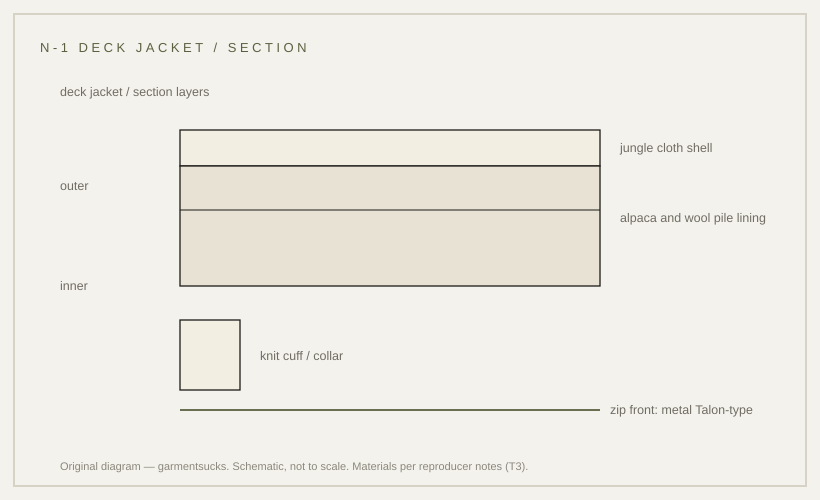

construction · 1944
N-1 deck jacket: jungle cloth, pile lining, zip front
The deck jacket built for men working in freezing spray — as its reproducers describe it.
probable Published 2026-11-13 · last checked 2026-11-13

1. Summary
The N-1 is a short US Navy deck jacket: a cotton jungle-cloth shell over an alpaca and wool pile lining, closed with a zip.
No specification, manual or museum record was found or opened for this garment, so the dating and materials rest on reproducer notes and marketplace listings. Confidence: probable — no T1 source was found; the dating and materials rest on T3 notes.
2. What this is
Jacket, Deck, Zip, Type N-1: a hip-length jacket for crews working on open decks. Jungle cloth is a tightly woven cotton grosgrain with a pronounced rib; the pile lining is a deep wool-alpaca fleece.
Reproducer notes describe a Navy Department label, a metal zip and urea buttons as period details.
3. Origin and context
Per marketplace listings, the navy-blue model was adopted in 1944 and a khaki model was issued in 1945; the colour change also dropped some alpaca details and simplified the cord fittings.
No T1 source was found: neither a Navy specification nor a museum object record for the N-1 was located. The 1944 date therefore stays unverified and is stated in the essay as per marketplace listings.
4. How it works
A tight cotton shell blocks wind; a pile lining traps air next to the body and keeps working when damp. The short body stays clear of a deck and of equipment. The knit cuffs and collar close the two places where cold air enters and where cloth would otherwise trail into machinery, and the zip front can be opened from the top for ventilation while the jacket stays on.
The wind and warmth mechanism is a property of the materials as described by the reproducer; the reason for the short cut is inference.
5. Construction
The work order readable from the garment: cut the shell, attach the lining, set the sleeves and knit cuffs, assemble the front zip, then the knit collar and hem.
This sequence is inferred from garment construction; no document opened for this card states it. Period details claimed by reproducers include a Talon-style metal zip and a Navy Department label.
6. Variants across eras
| Variant | Year/country | Difference | Source status |
|---|---|---|---|
| N-1, navy blue | 1944 (per marketplace listings), US | jungle cloth, alpaca/wool pile, zip front | unverified (T3 only) |
| N-1, khaki | 1945 (per marketplace listings), US | colour change; some alpaca details deleted | unverified (T3 only) |
| N-2 / N-3 | later 1940s, US | other deck and cold-weather jackets in the N series | not found |
| Modern reproduction | present | heavier cloth, cleaner finish | market observation |
7. Telling an original from a reproduction
Per marketplace listings and reproducer photographs: check the jungle-cloth rib, the pile lining, the knit cuffs and collar, and the label. Reproductions tend to be cleaner, heavier and warmer than the originals ever were, and their labels are usually modern prints rather than period stamps.
No period hardware was examined for this card, so the only safe test is comparing a candidate against the photographs on the listing pages cited here.
8. Common mistakes and myths
The common mistake is dating an N-1 from a reproduction's label or from the 1944 figure seen on retail pages: those pages are T3.
A second mistake is assuming every short knit-cuffed jacket is an N-1; the N-2 and N-3 are different garments.
9. How to read it in wear
The jacket reads from the hem and cuffs: short body, ribbed finishes, zip front. Worn over heavy knitwear, the short cut is the point.
10. Modern designer trail
The deck jacket's shape — short body, knit collar, zip — is a recurring outerwear reference. No direct-influence claim is made here.
11. Specification
The left column records what reproducer notes state; the right column is empty because no reproduction figures are proposed.
| Recorded in sources | Reproduction suggestion |
|---|---|
| Shell: cotton jungle cloth (cotton grosgrain); lining: alpaca and wool pile (per reproducer notes, T3) | — |
| Front zip: metal, Talon-type; buttons: urea (per reproducer notes, T3) | — |
| Date: navy model 1944, khaki 1945 (per marketplace listings, T3; no T1 found) | — |
12. Questions and exercises
1) Can you find a Navy Department label in a jacket you own? 2) Does the lining read as pile or as synthetic fleece? 3) Which claims on this card would change if a Navy specification were found?

Glossary
- Jungle cloth
- Tight cotton grosgrain with a pronounced rib.
- Pile lining
- Deep fleece, here alpaca and wool.
- Deck jacket
- Short jacket for crews working on open decks.
- Navy Department label
- Period label type cited by reproducers.
Sources
- [S1] [T3] Buzz Rickson's — Type N-1 Navy jacket notes (1944 navy model, 1945 khaki; jungle cloth; alpaca and wool pile; Talon zip; Navy Department label)
- [S2] [T3] Hinoya — Buzz Rickson's N-1 materials listing
- [S3] [T3] Grailed listing 87694552 — listing photo, @VintagecollectionsID, Grailed, accessed 2026-11-13
Claims & sources
| Claim | Source | Tier | URL | Status |
|---|---|---|---|---|
| Navy model adopted 1944; khaki model issued 1945 | Buzz Rickson's; Hinoya | T3 | link | unverified (no T1 found) |
| Shell is cotton jungle cloth; lining is alpaca and wool pile | Buzz Rickson's; Hinoya | T3 | link | unverified (no T1 found) |
| Metal zip and urea buttons; Navy Department label | Buzz Rickson's | T3 | link | unverified |
| Short cut keeps the jacket clear of a deck | inference from garment | — | inference |